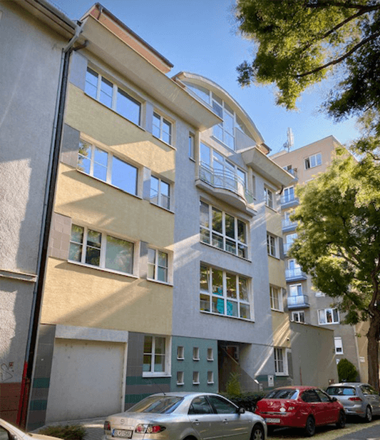
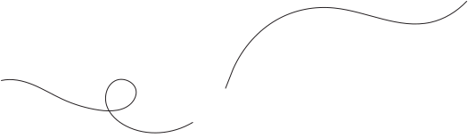
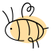
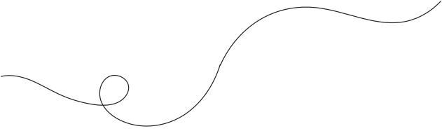
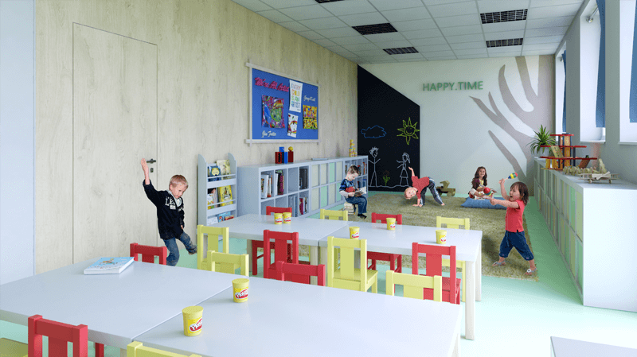
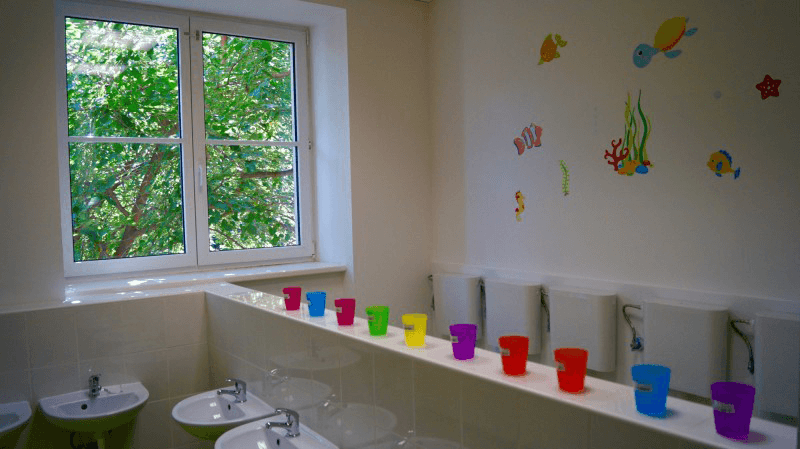
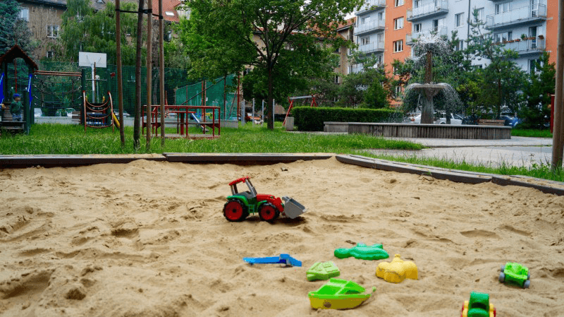
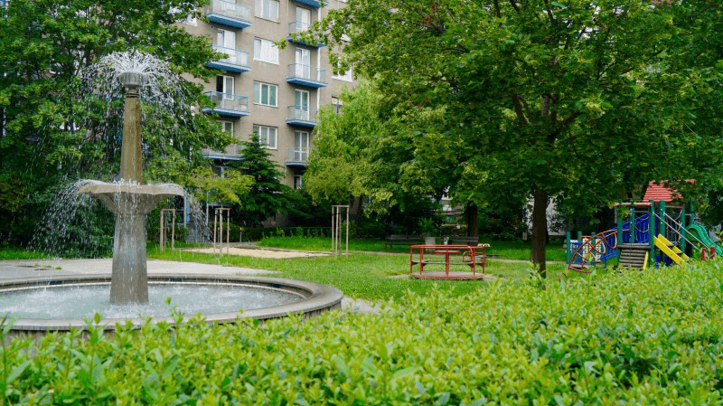

Sme súkromná materská škôlka s rozšírenou výučbou anglického jazyka v útulnom prostredí na Šumavskej ulici v Ružinove, s atraktívnym a zmysluplným programom pre detičky od 2 do 6 (7) rokov.


Každá trieda má dve pani učiteľky, z toho jedna je native speaker a s deťmi komunikuje po anglicky každý deň. Deti si angličtinu osvojujú bez stresu a tlaku.
15 detí v triede s dvoma pedagógmi, z toho jedným native speakerom, takže je dostatok priestoru pre osobný rozvoj každého dieťaťa.
Dodávateľ FOODI varí z kvalitných, často regionálnych surovín, bez rafinovaného cukru a bielej múky. Zabezpečíme akúkoľvek diétu. K olovrantu naše domáce smoothies a čerstvé ovocie.
Detská joga a dychové cvičenia každý deň pomáhajú deťom naštartovať deň s pokojom, sústredením a dobrou náladou.
Bystré hlavičky, Tvorivý svet, Singing star, Pohybové radosti a Let's to LEGO: tematické krúžky počas celého týždňa bez doplatkov.
Cez aplikáciu EduPage vás informujeme o tom, čo sa v škôlke deje, vrátane fotiek z aktivít a výletov.

Každá trieda má svojho maskota a program prispôsobený veku detí, od 2 do 6 (7) rokov.
2 – 3 roky
Citlivá adaptácia a postupné osamostatňovanie. Bezpečie, samoobslužné zručnosti a prvé sociálne kontakty.

3 – 4 roky
Rozvoj jazyka v slovenčine aj angličtine, tematické ročné plány a porozumenie svetu okolo.
4 – 5 rokov
Matematické a jazykové základy hravou formou, empatia a spolupráca, príprava na predškolský ročník.
5 – 6 (7) rokov
Kľúčový rok prípravy na základnú školu: čítanie, písanie, matematika, samostatnosť a sebavedomie.
Do troch rokov veku dieťaťa máte nárok na príspevok na škôlku od štátu.

„Ako rodičia sme veľmi spokojní so škôlkou. Poskytuje moderné a čisté priestory, ktoré sú bezpečné pre deti. Kvalifikovaní a láskaví učitelia majú individuálny prístup ku každému dieťaťu. Škôlka ponúka bohatý program plný vzdelávacích a zábavných aktivít, kreatívnych dielní, športu a výletov. Naše dieťa sa do škôlky teší a domov prichádza šťastné.“
„Naše dieťa sa tu cíti veľmi dobre a bezpečne. Prostredie škôlky je moderné a čisté, čo nám ako rodičom dodáva pocit istoty. Učitelia sú nielen kvalifikovaní, ale aj mimoriadne starostliví, vrátane zahraničných učiteľov, ktorí prinášajú do vzdelávania nový rozmer. Vďaka nim naše dieťa prirodzene a hravo zvláda angličtinu.“
„Naša dcérka navštevuje škôlku Happy-Time už druhý rok. Čo chceme zdôrazniť je program v škôlke, ktorý je veľmi bohatý a rozmanitý, zahŕňa vzdelávacie a zábavné aktivity, kreatívne dielne, šport a výlety. Cez aplikáciu EduPage nás informujú o tom, čo sa v škôlke deje, zasielajú sa fotky z aktivít a výletov, čo nám veľmi vyhovuje.“




Nenašli ste odpoveď? Zavolajte nám na +421 948 259 191 alebo napíšte na office@happy-time.sk, radi vám všetko ukážeme aj osobne.
Rezervovať obhliadkuPrijímame detičky od 2 rokov do 6 (7) rokov. Nástup je možný aj v priebehu školského roka, najlepšie však dieťatku padne, keď začne od septembra.
Deti prijímame celoročne. Stačí vyplniť kontaktný formulár nižšie a my sa vám v čo najkratšom čase ozveme. Informácie o potrebných dokladoch vám radi poskytneme osobne pri obhliadke.
Škôlka je otvorená pondelok až piatok od 7:00 do 17:30. Ranný príchod detí je od 7:00 do 8:00. Deti vyzdvihujete pri poldennom pobyte medzi 11:30 a 12:30, pri celodennom medzi 15:30 a 17:30 (po dohovore s triednou učiteľkou aj v iný čas). Každá začatá hodina mimo otváracích hodín je spoplatnená sumou 10 €.
Nie. Native speakeri, denná joga s dychovými cvičeniami aj všetkých päť tematických krúžkov je zahrnutých v cene programu.
Áno, do troch rokov veku dieťaťa máte nárok na príspevok na škôlku od štátu. Viac informácií tu.
Áno, od 1. 9. 2017 je SMŠ HAPPY-TIME zaradená do siete škôl a školských zariadení SR Ministerstvom školstva, vedy, výskumu a športu SR.
Najlepšie sa presvedčíte osobne. Nechajte nám kontakt a dohodneme si termín, ktorý vám vyhovuje.
Vašu žiadosť sme prijali. Ozveme sa vám v čo najkratšom čase a dohodneme termín obhliadky.
Nevyhnutné cookies potrebujeme na fungovanie stránky. S vaším súhlasom používame aj analytické a marketingové — pomáhajú nám ukázať škôlku ďalším rodinám v okolí. Voľbu zmeníte kedykoľvek v pätičke, podrobnosti v ochrane osobných údajov.